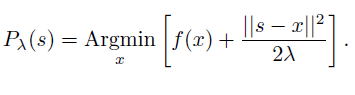

Graph-matrix calculus (GPH), Proximal mapping
gphprox = gph_prox(gph, lambda)
matrix. A function in GPH matrix form.
constant. A positive smoothing parameter.
matrix. The proximal mapping of the function gph, as a GPH matrix.
Computes the proximal mapping of a given GPH function. The proximal mapping is the set of minimizers of the Moreau envelope,

gph = [-1 , 0, 1, 2; ... 0 , 1, 3, 3; ... -0.5, 0, 2, 3]; lambda = 2; gphprox = gph_prox(gph, lambda), gph_plot(gph, gphprox); |
Bryan Gardiner, University of British Columbia, BC, Canada